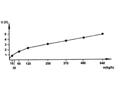

1056BE Check efficiency of hot film air flow meter
- Path
- Test > 10 ENGINE > 1056 PETROL INJECTION SYSTEM > 1056B multi-point injection system (mpi) > 1056BE Check efficiency of hot film air flow meter
- Kind
- test / check procedure
- Applies to
- engines: 1.6 TS , 1.8 TS; all production periods
- Interactive page
- https://sloeber94.github.io/elrnDB-a156/en/#/3239125
Applies to: engines: 1.6 TS ; all production periods
Make sure that the ignition is in the OFF position, then disconnect the negative battery terminal (refer to op. 5530B10 battery - r+r ).
Disconnect the electrical connection from the hot film air flow meter.
 | Name | Connector |
|---|---|---|
- | Air flow meter |
Check the air flow meter curve by measuring the voltage between pins 4 and 2 in accordance with the air flow rate.
